Cloudflare OS Essentials
Build small apps safely with chat, not code
Ask once, keep the tool.
Cover · final
Build small apps safely with chat, not code
Ask once, keep the tool.
Contents · page numbers synced to body
Preface · 1/2
Hi. I’m Masahiro Nakagawa, an office worker in my thirties at an IT company. Day to day I use the company’s standard apps, but I still bump into small annoyances that only show up in my own work.
For big systems - sales tracking, time sheets - the official tools are fine. The real friction lives outside them. Steps only I share with a partner. A checklist two of us keep alive. A tiny tally inside the team. Asking engineering to turn that into a standard app rarely moves the queue. Building an app myself from scratch costs too much time. I lived with those gaps for a long time.
Then I found Cloudflare OS. It’s a place where you chat with generative AI, build the small apps you want, and use them right away. It doesn’t replace large business systems. After using it, I became convinced it answers the “I just want this one thing a little better” requests that differ from person to person.
Once I started, asking in chat left slides and small tools on my desk. They take shape without me writing code, and if something is missing I can add it in conversation. I can share them with a colleague or hand them out as app templates. In product language, those are Gadgets (small personal apps) and Blueprints (app templates).
Preface · 2/2
Another thing that stood out: it can run inside a closed company setup. Host it on your organization’s account, tighten who can enter, and route outside connections through Gatekeepers. You don’t hand every secret to the AI; only the resources you choose pass through. Convenience and safety share the same foundation.
Inside Cloudflare, many people - including non-engineers - use this every day. Open-sourcing it isn’t only about borrowing the Cloudflare name. The real point is that you can host a “Your Company OS” with your own words and workflows.
In this book I explain how I see Cloudflare OS and how I use it, mostly through on-screen steps. You don’t need deep programming knowledge. If you can follow buttons and chat, you’re set. Chapter 1 covers the big picture and terms, Chapter 2 startup, Chapter 3 the screens, Chapter 4 features, then three hands-on chapters from Chapter 5. If you’re in a hurry, jump to Chapter 5 after Chapter 2 and return to Chapters 1 and 4 when a term trips you up.
Ask generative AI once, get an app, and keep a place where you can use it together. I hope this book helps you try that way of working - and that the “I just need this” ideas on your desk don’t have to wait in the engineering queue. This is an unofficial learning guide by Masahiro Nakagawa of smilior.com.
*Based on information as of August 2026. Cloudflare OS is in Early Access; screens may change. This book is a learning guide, not a replacement for official documentation.
Ch. 1 · chapter opener
1
Terms and the big picture, in plain language
Ch. 1 · 1 In one sentence
If I had to put Cloudflare OS in one sentence: it’s a place where you chat with generative AI, make the small apps and docs you want, and use them right away. It isn’t an OS you install on a PC like Windows or macOS. You open it in a browser, ask in chat, and the slides or small apps you make stay there, ready to reopen.
With a normal chat AI, good answers often vanish into the conversation. In Cloudflare OS, what you built stays as a Gadget, so you can open the same tool again tomorrow. This isn’t about replacing standard business apps - it’s a place to fill the gaps between them.
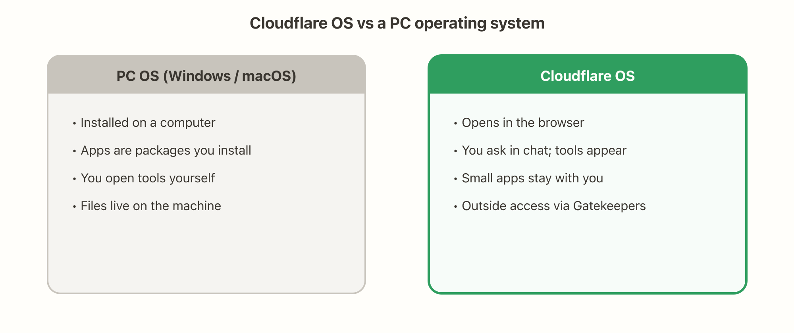
Figure: A regular OS (on a PC) vs. Cloudflare OS
Ch. 1 · 2 Three things to remember
Throughout this book you’ll see agent, Gadget, and Gatekeepers a lot. Their roles look like the figure below. Detailed clicks are in Chapter 3; deeper mechanics are in Chapter 4.
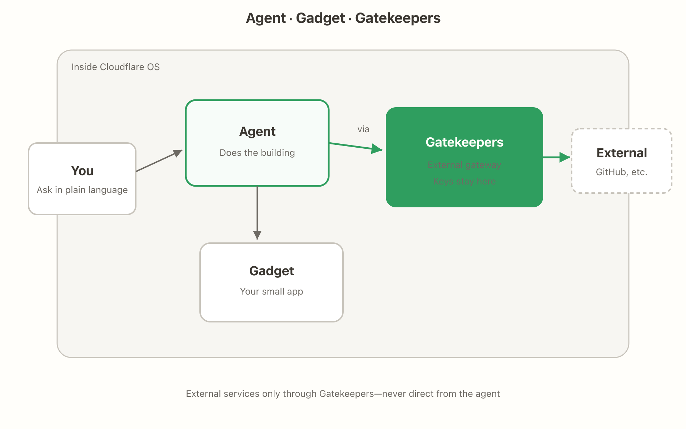
Figure: Three players. Ask the agent; outside links always go through Gatekeepers
Ch. 1 · 3 One company door, personal rooms inside
Even when a company runs one Cloudflare OS, each person gets their own place to run apps. By default, a Gadget is a personal app. To use something with others, you either copy and run your own or share and work together. The next figure shows both. We return to that choice in Chapter 4.
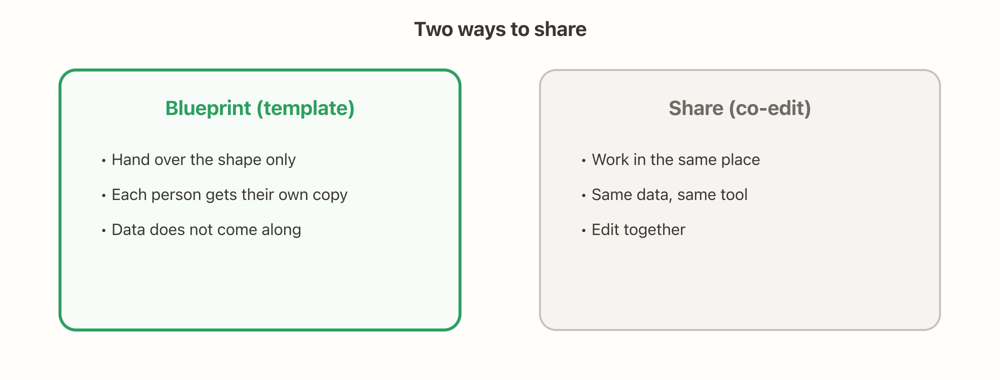
Figure: Shared entrance, personal environments. Copy for yourself / share and work together
Ch. 1 · 4 How this book is organized
This book assumes you set up Cloudflare OS in your own environment and work hands-on. Local on a laptop or on your (company) Cloudflare account - either is fine. If you only look at the screenshots, the hands-on work from Chapter 5 gets hard.
The rough chapter order is below. If you’re in a hurry, go to Chapter 5 after Chapter 2; when a term trips you up, return to Chapters 1 and 4.
Keep this flow in mind: ask → shape appears → review and fix → hand off (copy for yourself / share and work together). From the next chapter, we start the real setup.
Ch. 1 · 5 Keyword cheat sheet
Words you’ll see often. Short analogies beat strict definitions. Use this as a look-up table later.
| Word | Think of it as… |
|---|---|
| Agent | The one you talk to in plain language; it writes the code |
| Gadget | Your own small app |
| Blueprint | An app template (no data attached) |
| Gatekeepers | The system that links to outside services |
| Workspace | Where you work now (chat and apps together) |
| Your Company OS | Cloudflare OS hosted as your company’s own, with your words and connections (see the Preface and Closing; sharing basics in Ch. 4) |
Ch. 1 · summary
Tip
The overview alone can feel abstract. Set up the environment and try it - the picture comes into focus quickly. From here, learn by doing.
Ch. 2 · chapter opener · final
2
Get ready to run it on your computer
Ch. 2 · 1 How you can run it
There are roughly three ways to run Cloudflare OS.
This book takes the path of installing on a local PC and trying things there. You start it on your desk, open the screens, and use the same environment through the hands-on chapters from Chapter 5. Concrete steps start in the next section.
Screens and captures mostly use macOS as the example. Install and startup on Windows are basically the same. Menu names and how you open the terminal differ a little; the commands and browser checks later work as written.
For production inside a company, you’d run it on internal servers or a company Cloudflare account. Settings and security policy vary by organization. Those designs are out of scope here. This chapter’s goal is to run it locally and get the full picture.
Note
Cloudflare OS is in Early Access. Screens and steps can change with updates. If you get stuck, check the official README too.
Ch. 2 · 2 Install it locally
From here we install Cloudflare OS on your computer and run it. The official basic path is “install pnpm and start” (https://github.com/cloudflare/cloudflare-os).
Button names and design may change later. What matters is what you install. You need these four things.
| Step | What to install | In short |
|---|---|---|
| 1 | Node.js | Foundation. Official: https://nodejs.org/ |
| 2 | Git | Fetch the source. Official: https://git-scm.com/ |
| 3 | pnpm | Used to start. Official: https://pnpm.io/ |
| 4 | Cloudflare OS itself | Clone from GitHub and run |
The “commands” below go in a dedicated app - not a browser search bar. On Mac that’s Terminal; on Windows it’s PowerShell. How to open each is at the start of that OS’s steps. Read only your OS’s pages.
Ch. 2 · 3 macOS steps
0. Open Terminal first
The text (commands) below go into an app called Terminal, not a browser search bar. It is a window made for typing.
Ways to open it:
Once open, copy text from this book’s code boxes, paste it, and press Enter. One line at a time is safer.
1. Install Node.js
Open https://nodejs.org/ in Safari or another browser. Use the main download (“Get Node.js” or similar). Double-click the installer (.pkg and so on) and finish the steps. Button names change; if you get from download to “install finished,” you are good.
When done, close Terminal and open it again, then type the following and press Enter.
node -v npm -v
If each prints a version number (for example v24.x.x), it worked.
2. Install Git
In Terminal type the following and press Enter. On a new Mac you may see a prompt to install developer tools - choose Install.
xcode-select --install git --version
If you see something like git version …, you are fine. If not, also check the macOS guide at https://git-scm.com/.
Ch. 2 · 3 macOS · pnpm
3. Install pnpm
In the same Terminal, run the following. Copy one line at a time and press Enter.
npm install -g pnpm
pnpm -v
A version number means success. If nothing appears, close Terminal, reopen it, and try again.
Ch. 2 · 3 macOS · start
4. Get Cloudflare OS and start it
Keep Terminal open. Copy the lines below from top to bottom and press Enter after each (one at a time is safer).
cd ~ git clone https://github.com/cloudflare/cloudflare-os.git cd cloudflare-os pnpm install pnpm run-local
In plain terms: go to your home folder → download the official project → enter that folder → install the parts it needs → start. The first run can take a few minutes. To stop, press Control + C in Terminal.
5. Open it in a browser
Leave Terminal running and open Safari or Chrome. In the address bar at the top, type the following and press Enter.
http://localhost:8787
If the Cloudflare OS screen appears, Mac setup is done.
Ch. 2 · 4 Windows steps
0. Open PowerShell first
The text (commands) below go into an app called PowerShell, not a browser search bar. It is a window made for typing.
Ways to open it:
Once open, copy text from this book’s code boxes, paste it, and press Enter. One line at a time is safer.
1. Install Node.js
Open https://nodejs.org/ in Edge or Chrome. Use the main download (“Get Node.js” or similar). Run the installer (.msi and so on) and finish. Button names change; download → install finished is enough.
When done, close PowerShell and open it again, then type the following and press Enter.
node -v npm -v
Version numbers mean success.
2. Install Git
Open https://git-scm.com/, download Git for Windows, and run the installer. When choices are unclear, Next is often fine. After install, reopen PowerShell and check:
git --version
A version number means it worked.
Ch. 2 · 4 Windows · pnpm
3. Install pnpm
In the same PowerShell, run the following. One line at a time is fine.
npm install -g pnpm
pnpm -v
A version number means success. If nothing appears, close PowerShell, reopen it, and try again.
Ch. 2 · 4 Windows · start
4. Get Cloudflare OS and start it
With PowerShell open, copy the lines below from top to bottom and press Enter after each.
cd $HOME git clone https://github.com/cloudflare/cloudflare-os.git cd cloudflare-os pnpm install pnpm run-local
In plain terms: go to your home folder → download the official project → enter that folder → install the parts it needs → start. The first run can take a few minutes. To stop, press Ctrl + C in PowerShell.
5. Open it in a browser
Leave PowerShell running and open Edge or Chrome. In the address bar, type the following and press Enter.
http://localhost:8787
If the Cloudflare OS screen appears, Windows setup is done.
If something fails
“Not recognized” or “command not found” often clears after you close and reopen the window right after installing. Also confirm that Node.js → Git → pnpm are installed in that order.
Ch. 2 · summary · final
pnpm run-localTip
Cloudflare OS is now on your machine. Next we create an account and walk through the screens one by one.
Ch. 3 · chapter opener
3
From account signup to learning the UI
Ch. 3 · 1 Create an account
Through Chapter 2, Cloudflare OS is running locally. This chapter follows the first-time user path. Create your own account, sign in, and learn where things live on screen.
Open http://localhost:8787 in a browser and you get the sign-in screen. If you don’t have an account yet, that’s normal.
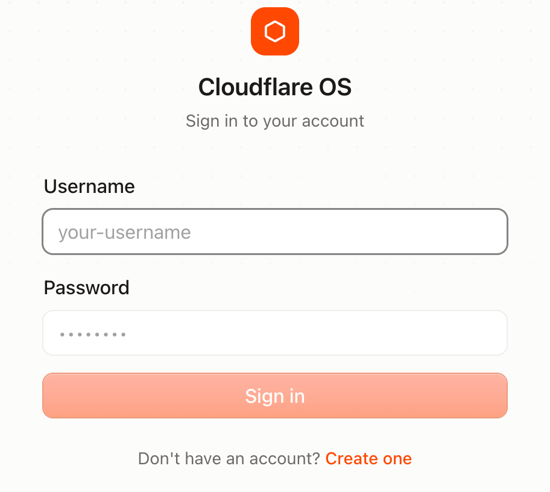
Figure: Sign-in screen. First-time users choose Create one
Under the form you’ll see “Don’t have an account? Create one.” First-time users click Create one. If you already have an account, enter your username and password and choose Sign in.
Ch. 3 · 2 Fill in the registration form
After Create one, you land on a Create your account screen like the one below.

Figure: Create account screen
Enter these three fields.
When ready, press the orange Create account button. On success, you go straight into first-time setup.
Ch. 3 · 3 After create and next visits
When Create account succeeds, you do not return to sign-in - you go into first-time setup (next section). First-time users can stay on that path.
On later visits to http://localhost:8787, you start at the sign-in screen.
1. Enter the username you registered in Username
2. Enter your password in Password
3. Press the orange Sign in
After sign-in, if setup is done you land on Home; if not, setup continues.
Note
Write down your username and password. Even for local use, forgetting them can lock you out of the product.
Ch. 3 · 4 First-time setup
The first time only, a “Let’s set you up” wizard appears. Four progress dots at the top mark this order:
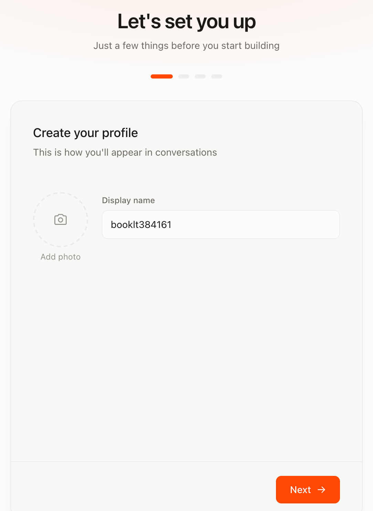
Figure: First-time setup 1 - profile
You can leave the display name as it is and press Next. The next screen - AI model registration - is the most important step.
Ch. 3 · 5 Register an AI model
Setup step two is “Choose your model.” The model you register here is the core of Cloudflare OS. The agent you chat with uses this model to think and to write code or docs. Without a model, the agent does not run.

Figure: First-time setup 2 - Choose your model
On a first visit you may see “No models configured yet.” Press Add new model... and go to the model registration screen.
Ch. 3 · 5 Model registration and billing
Add new model opens an “Add AI Model” screen. Pick a model, enter an API token (key), and press Add Model.

Figure: Add model - model choice and API Token
The AI you use here is usually billed by usage (you pay for what you use). Separate from Cloudflare OS itself, sign up with Anthropic, OpenAI, or another provider, create an API key (API Token), and paste it into this field. Without a key you cannot finish registration.
After you register it, return to setup and press Next for external services.
Note
Treat API keys like passwords. Don’t show them to others or leave them in plain text in screenshots or notes. The UI masks them. Check spend limits and billing in each provider’s console.
Ch. 3 · 6 External services
Setup step three is “Connect your services.” It links outside services such as GitHub, Slack, or Google to Cloudflare OS. Once linked, agents and Gadgets can use them through Gatekeepers.

Figure: First-time setup 3 - Connect your services
Leaving everything “Not connected” is fine - this step is optional. At this stage of the book you can skip it. Press Next alone. Hands-on connecting is in Chapter 7. You can add services anytime later.
Ch. 3 · first-time setup done
The last screen is “You’re all set.” After a short tour of what you can do, press Let’s build at the bottom right to enter Home. With a model in place - even if external links wait - you have the foundation for the agent to work with.

Figure: First-time setup 4 - done (Let’s build goes to Home)
Next we look at what Home shows you.
Ch. 3 · 7 Home
Home is the main screen after you sign in. In the center is “What are we working on?” and an input field - that’s where you start talking to the agent.
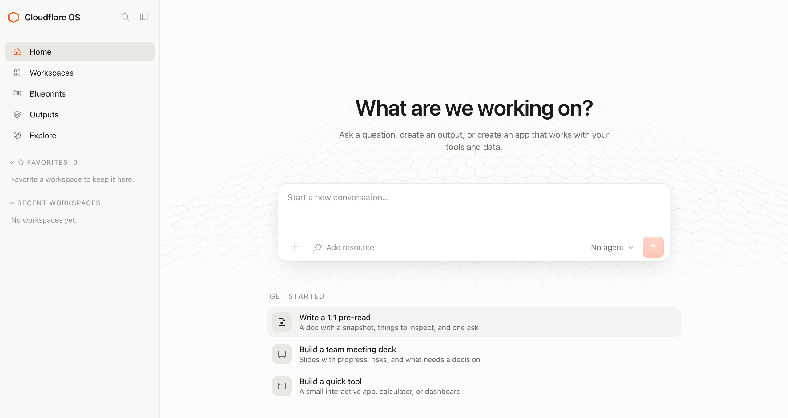
Figure: Home - left nav and center input
The left vertical menu is the map of the whole product.
GET STARTED below shows sample prompts for newcomers. Lost? Return to left-nav Home.
Ch. 3 · 8 Workspaces
A workspace is where everything for the current job gathers. Chat, the apps you made (Gadgets), and Gatekeepers connections stay separate per workspace. Same idea as Chapter 1: “where you work now.”
Open Workspaces in the left menu for the list. Top-right Create workspace makes a new one. Click a name to open an existing one.

Figure: Workspaces - the places you work
Starting a conversation from Home’s input can create a workspace as needed. “Untitled Workspace” is fine at first. Real work inside a workspace (chat requests, building slides) starts in Chapter 5.
Ch. 3 · 9 Blueprints
Blueprints is the shelf for app templates. Templates you published or saved are listed. From here you can open a workspace and start from the same shape for yourself. Data and passwords do not travel with a Blueprint (same idea as Chapter 1).

Figure: Blueprints - your app templates
The first time you open it often shows “No blueprints yet.” Use Explore blueprints for public templates or Upload .gadget to import a file. Building content is fine from Chapter 5 onward. For now, remember this as “your personal template shelf.”
Ch. 3 · 10 Outputs
Outputs gathers what workspaces produced. Filter by Apps, Docs, Sheets, Slides, and so on. When you wonder “where did that go?”, this is the shelf to check.
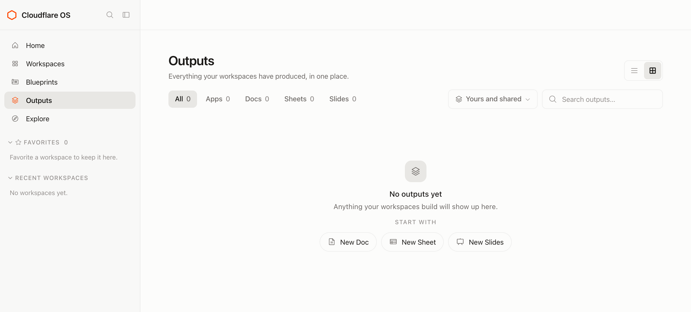
Figure: Outputs - list of finished results
If you haven’t made anything yet, you may see “No outputs yet.” Bottom shortcuts like New Doc / New Sheet / New slides start from templates. Knowing that “results show up here” is enough for now.
Ch. 3 · 11 Explore
Explore is where you browse recommended templates. FEATURED shows shapes for docs, slides, and spreadsheets (for example Workspace Docs / Slides / Sheets). Opening one can create a workspace from that shape. You can also save a template for later.

Figure: Explore - public templates
If Blueprints is “your shelf,” Explore is closer to “the storefront.” Chapter 5’s slide work may start by picking a shape here. Knowing where Explore is and what it’s for is enough for now.
Ch. 3 · 12 Quick map when you get lost
A rough map of where to click. How things work is Chapter 4; real building starts in Chapter 5.
| What you want | Open first |
|---|---|
| Start a new conversation | Home input field |
| Find a place you left work | Workspaces |
| See your templates | Blueprints |
| Browse public shapes | Explore |
| See finished results | Outputs |
| If you get lost | Left-nav Home |
Button labels can shift slightly between versions. If a button sits in about the same place and clearly means the same thing, treat it as the one described here and continue.
Ch. 3 · summary
Tip
That covers sign-in and model setup. Next we run your Cloudflare OS for real and look at agents, Gatekeepers, and more. Full slide-building starts in Chapter 5.
Ch. 4 · chapter opener
4
See how it behaves on your Cloudflare OS
Ch. 4 · 1 Getting started
In Chapters 2 and 3 you set up Cloudflare OS, with an account and AI model ready. From this chapter, let’s use that setup and see how the product behaves.
Reading alone gives a picture, but it’s much clearer with the screen open. Keep Terminal (or PowerShell) running and stay signed in at http://localhost:8787 while you read.
If you closed the terminal window that was running it, move into the Cloudflare OS folder from Chapter 2 and run:
cd ~/cloudflare-os pnpm run-local
If you put the folder somewhere else, use that path. When it’s running, open http://localhost:8787 again.
We begin by talking to the agent. Then we cover Gadget, two ways to share, and Gatekeepers - each tied to what you see on screen. Serious building starts in Chapter 5. The goal here is to understand why things work the way they do.
Ch. 4 · 2 Talk to the agent
The agent is the one you talk to in plain language. It writes the code. Open Home and type a short request like this in the center field.
Example
Make a simple three-line memo screen for today’s tasks
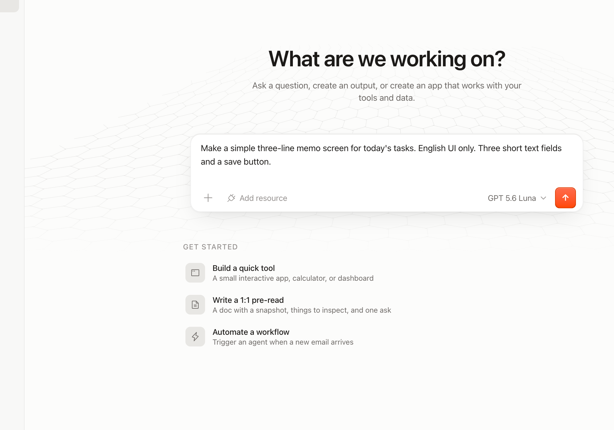
Figure: Home with the three-line memo request (model example: GPT 5.6 Luna)
Press send (↑) at the bottom right. A workspace opens and the agent starts working.
Ch. 4 · 2 Review then accept
After a while, a memo preview appears on the right. On the left you see work in progress (files written, and so on). What matters: nothing is committed yet. Often you’ll see Accept changes and Discard at the bottom.
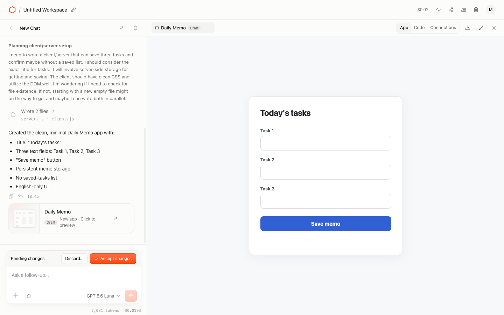
Figure: The agent builds Daily Memo. Watch Draft and Accept changes
If the content looks good, press Accept changes. That commits the draft and leaves you with a small personal app (the Gadget in the next section).
Ch. 4 · 2 Use what you built
After Accept, try typing on the memo screen. Write today’s tasks in the three lines and save, following the on-screen guidance.
If something doesn’t match what you expected, ask a follow-up. In this example the task entry screen appeared, but there was no place to see a list of what you entered. So we ask the agent to add a list view.
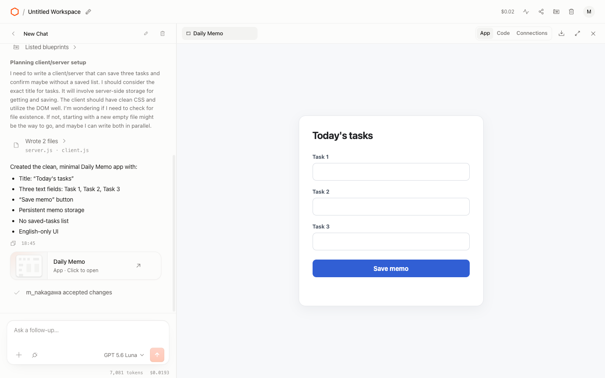
Figure: Daily Memo right after Accept - three fields and Save memo
In the bottom-left Ask a follow-up... field, write how you want it fixed and send.
Ch. 4 · 2 Follow-up fix
Here is the follow-up we sent:
Example (follow-up)
Let me see what I entered as a list. Under the three-line input, add a list of saved tasks
After the agent fixes it, press Accept changes again if it appears. When it works, you’ll see something like the figure: a list of saved tasks under the inputs. Fixing again and again in the same conversation is the basic agent workflow.
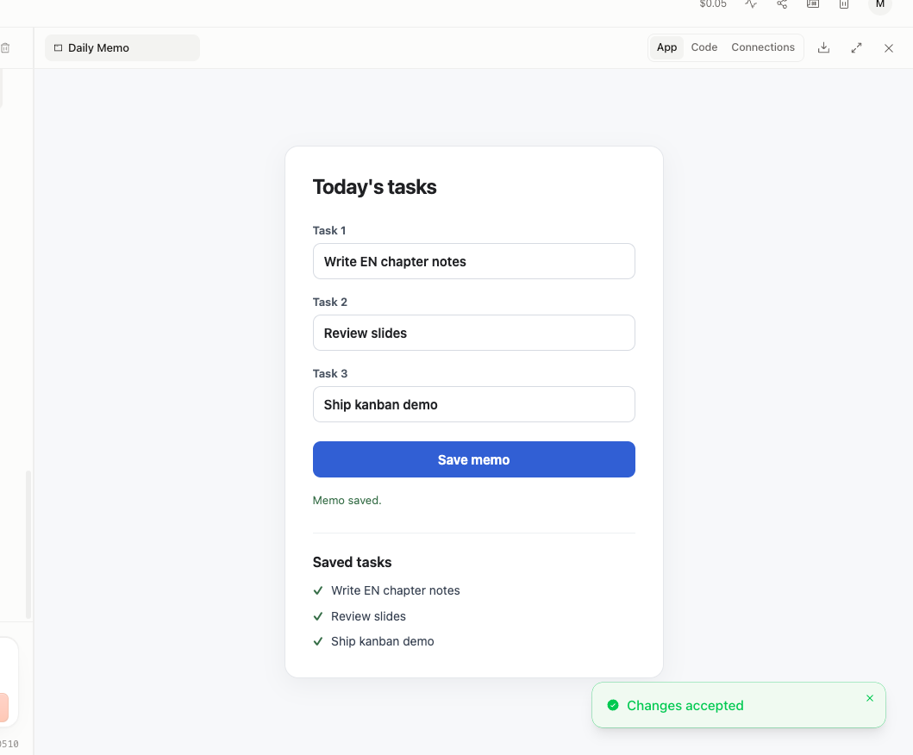
Figure: After follow-up Accept - Saved tasks listed under the three inputs
Tip
A few lines of chat left you with a usable app on your desk. You may have generated app code in Claude or ChatGPT before - and then wondered where to host it. In Cloudflare OS the tool keeps running where you made it, so that problem goes away.
Ch. 4 · 3 Gadget and Blueprint
In the previous section you built a “today’s tasks” mini-app. That kind of app is a Gadget - your personal small tool. Your edits don’t affect someone else’s copy.
A Blueprint is the app’s shape (template). Use it when you want others to have a similar tool. You hand over a snapshot of the code, not the data, so each person creates a new Gadget for themselves. They are not opening your Gadget together with you.
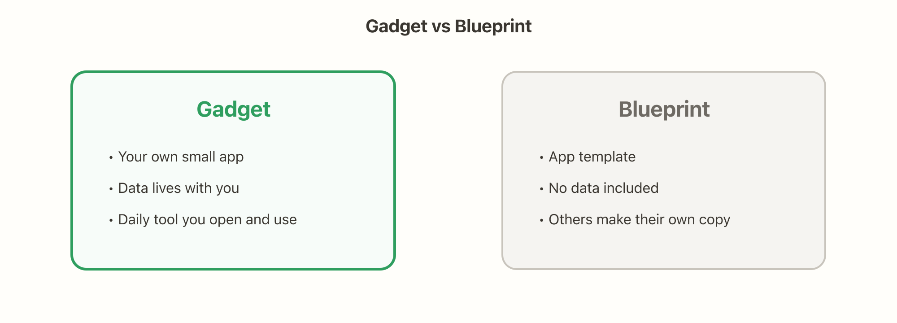
Figure: Gadget (your tool) vs Blueprint (app template)
Data and passwords do not attach to a Blueprint. How to make and find Gadgets and Blueprints comes next.
Ch. 4 · 3 How to make and find Gadgets
Making and finding a Gadget
Make - As before: ask the agent and Accept. That’s the main path. Start from Home or a workspace chat.
Find - Open it inside the workspace you’re in (tabs and so on). To find it again later, open Outputs in the left menu. Workspace results show as Gadgets (apps) in a list - including this chapter’s “today’s three-line memo.”
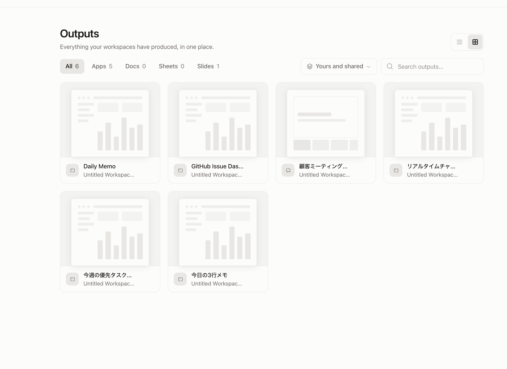
Figure: Outputs - list of finished Gadgets (Apps)
Outputs also has tabs for Docs / Sheets / Slides. It isn’t named “Gadgets only” - think of it as a “shelf for finished things.”
Ch. 4 · 3 How to make and find Blueprints
Making and finding a Blueprint
Find - Left menu Blueprints. Shapes you saved or published are listed. Empty state often says “No blueprints yet.” To browse public shapes, use Explore.
Make - Follow the UI: publish a workspace as a blueprint, import from Explore, or Upload .gadget. Button names can shift by version.
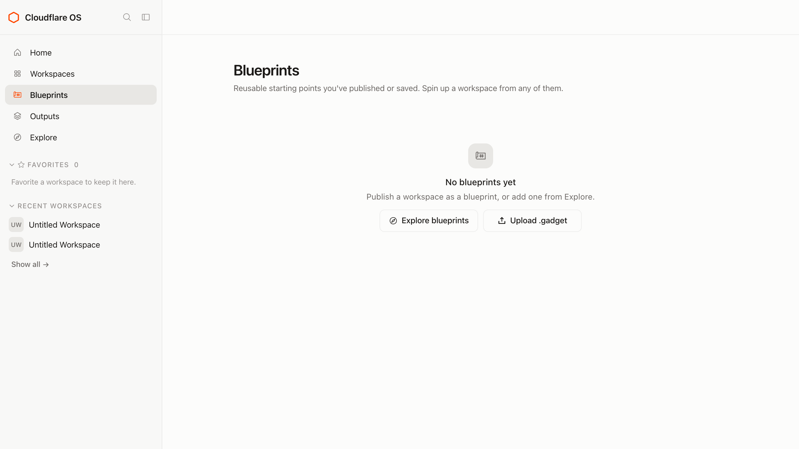
Figure: Blueprints - template shelf (often empty at first)
In this chapter, building and running a Gadget is enough. Come back to publishing as a Blueprint when you want to hand someone only the shape of the app.
Ch. 4 · 4 Two ways to share
There are roughly two ways to use something with others - the same idea as the Chapter 1 figure.
Figure: Copy (template) vs share (work together) - same as Chapter 1
Want to edit the memo contents together? Share. Want only the shape, used separately? Use a Blueprint. When unsure, keep it as a personal Gadget and decide later.
Ch. 4 · 5 Gatekeepers
Gatekeepers sits between you and outside services (GitHub and more). At first neither the agent nor Gadgets are linked outside. When you connect, you pick only the resources you need. Keys stay with Gatekeepers; the agent does not hold them directly.
Figure: Outside only through Gatekeepers - same as Chapter 1
The memo above works with no outside service. Connecting GitHub or Slack is covered in Chapter 7. That is why it was fine to skip Connect your services during setup in Chapter 3.
Note
When you allow writes to outside services, keep permissions narrow. Check your organization’s rules so sensitive data does not leak to the wrong people.
Ch. 4 · summary
Tip
If you can ask, shape, and keep something, this chapter is done. Next we use the same flow to build a full slide deck.
Ch. 5 · chapter opener
5
Set a goal, revise in loops, finish
Ch. 5 · 1 Goal
In this chapter you finish a deck of “next week’s customer meeting slides.” The point isn’t a perfect first prompt. You practice first request → review → follow-up fixes until the deck is usable.
It’s bigger than Chapter 4’s memo, but the path is the same: start from Home (or a new chat), Accept to commit, and fix gaps with follow-ups.
You’re done when
Five slides - cover, challenge, proposal, impact, next steps - with short titles and a customer-ready tone.
Startup and sign-in match Chapters 3–4. If it stopped, restart with pnpm run-local.
Ch. 5 · 2 First request
Don’t try to describe the finished deck in one go. Start with a request that shows the skeleton. Decide the slide count, structure, and language first - later fixes get easier.
First request (example)
Please make a 5-slide deck in English for next week’s customer meeting. Structure: Cover, Challenge, Proposal, Impact, Next steps. Keep titles short; body mainly bullets.
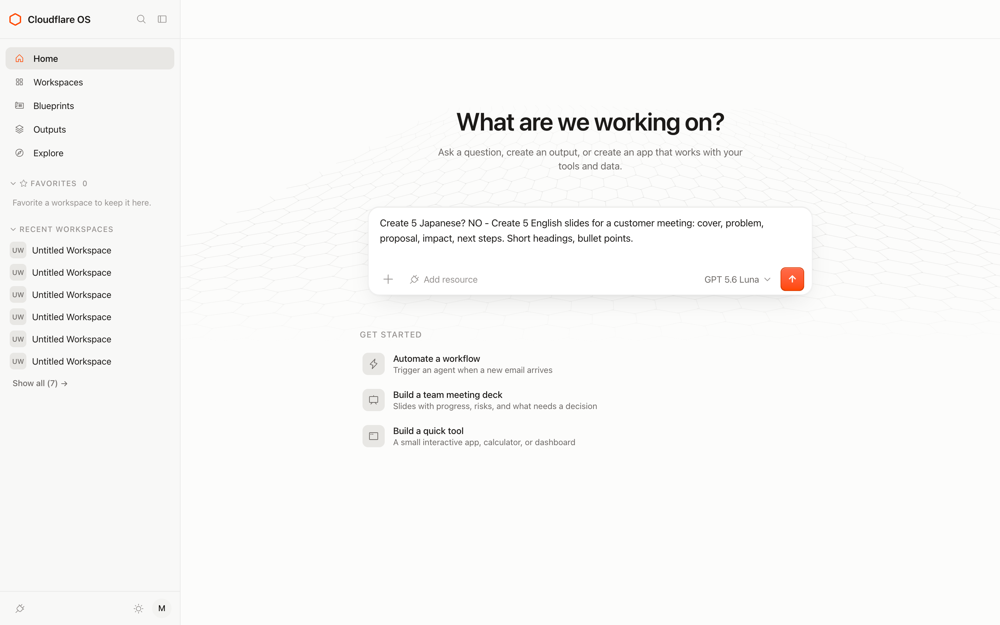
Figure: First request entered on Home
Send, and a workspace opens while the agent works. It can take a while; that doesn’t mean it is stuck.
Ch. 5 · 3 Review and accept
When a preview appears, skim it. This stage is a draft, not finished work. If it is good enough, press Accept changes and keep it as your own slide Gadget.
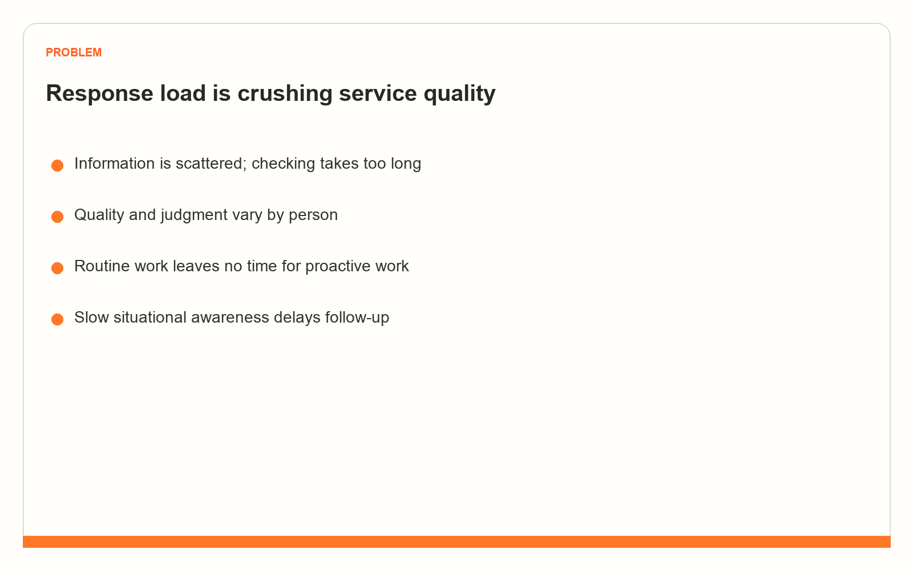
Figure: A slide from the accepted draft. In the app, use the bottom arrows to flip pages
After Accept, flip through each slide and check titles and bullets. Watch for cut-off text and structure. Note issues for the next follow-up.
Ch. 5 · 4 Follow-up fixes
One-shot perfection is rare. In Ask a follow-up, be specific. “Make everything better” is weaker than “shorten the title on slide 2” or “keep slide 3 to three points.”
Follow-up (example)
Shorten the title on slide 2 (Challenge). On slide 3 (Proposal), keep the bullets to three points. Make the whole deck’s tone more businesslike.
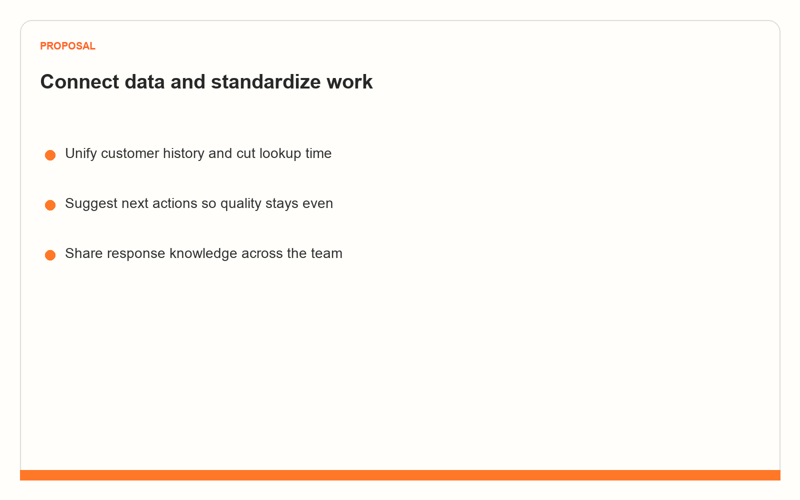
Figure: Slide 2 (Challenge) before the fix - this follow-up shortens its title
Press Accept again when it appears. Repeat in the same conversation until the five-slide structure and tone match the goal. That loop is the main line of this chapter.
Ch. 5 · 5 Final check
Against the “you’re done when” list, check yourself:
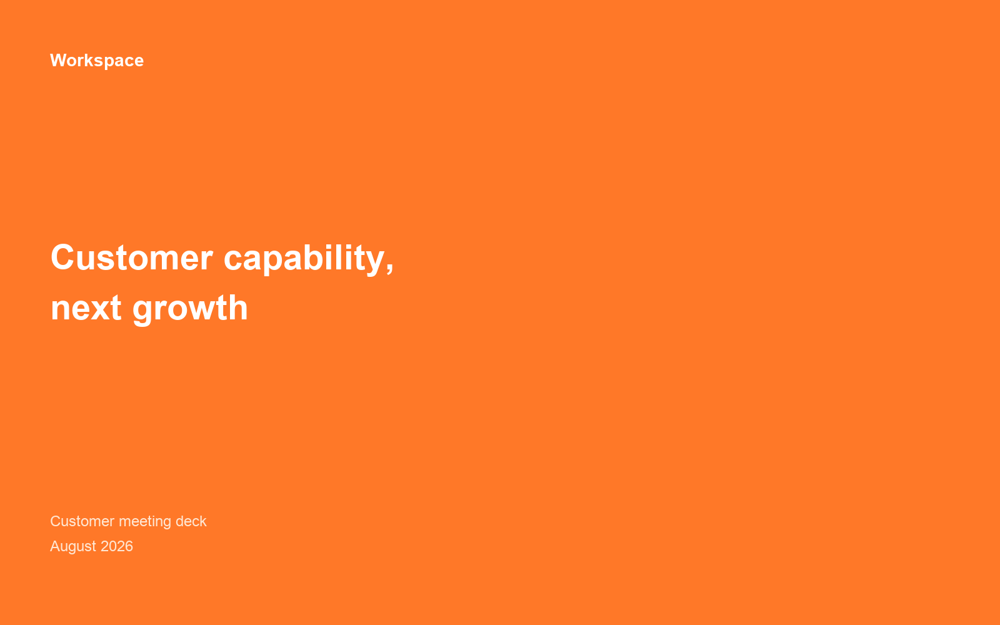
Figure: The finished cover (one example)
Flip through slides 2–5 as well as the cover. The next page shows sample content that can result from this process.
Ch. 5 · 6 Sample contents
After the first request and follow-ups, you can end up with slides like these (one example). From top left: Challenge, Proposal, Impact, Next steps. Check that each title fits inside its frame.
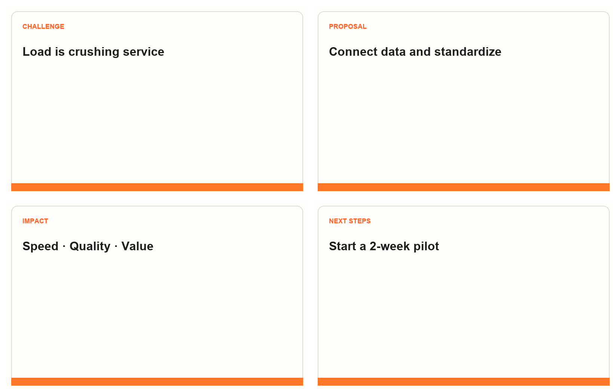
Figure: Slides 2–5 of the sample deck (titles shown)
Sharing is optional. If someone will edit with you, use Chapter 4’s share path; if you only need the shape, use a Blueprint. A usable personal copy is enough to finish this chapter.
Ch. 5 · summary
Tip
The core isn’t a perfect one-shot prompt - it’s the make → look → fix loop. The next chapter uses the same loop for a small work app.
Ch. 6 · chapter opener
6
Shape the tool you want with repeated fixes
Ch. 6 · 1 Goal
Here you build a “this week’s priority task board.” Columns: To do, In progress, Done. It is a small internal board where you can add and move cards.
It has more interaction than Chapter 4’s memo, and it is a different kind of “work tool” than Chapter 5’s slides. The path is the same: set a goal, first request, Accept, follow-ups, finish.
You’re done when
A three-column board; you can add cards; you can assign an owner; To do is visually distinct from the other columns.
A whiteboard or tic-tac-toe board would work as a subject too. What matters is deciding what “success” means before you start.
Ch. 6 · 2 First request
Briefly state who it is for, why, and what actions it should support. Don’t cram every wish at once - start with the skeleton.
First request (example)
Build an internal “this week’s priority task board.” Columns: To do, In progress, Done. Simple screen to add and move cards. English UI.
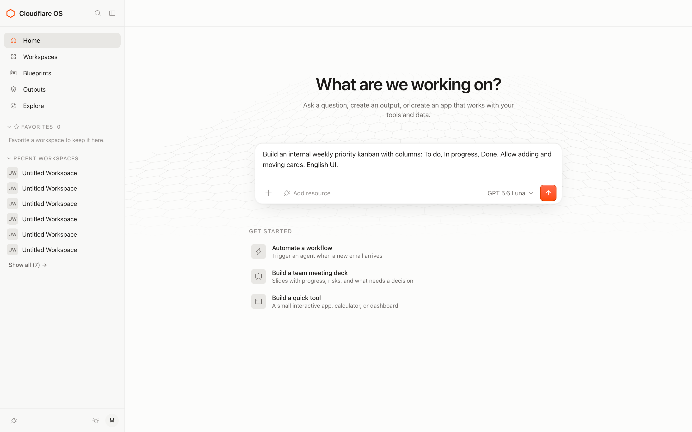
Figure: First request entered
Send and wait for a proposal. In the preview, check roughly whether the columns and cards look movable.
Ch. 6 · 3 Try it
After Accept changes, try it yourself. Add one card, move it across columns - actions close to the done list above.
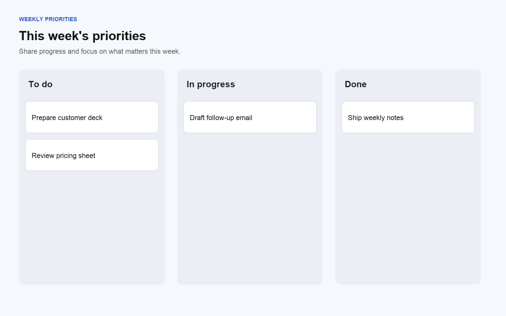
Figure: The board Gadget (finished state shown; a first draft is often plainer)
Note anything that misses the done list above - in our first run, owners were missing and the columns were hard to tell apart. Those notes feed into the next follow-up.
Ch. 6 · 4 Follow-up fixes
Ask specifically for features still missing for the goal. You don’t have to fix everything at once - highest priority first is fine.
Follow-up (example)
Let each card have a one-line owner name. Lighten the To do column color so it stands out from the others.
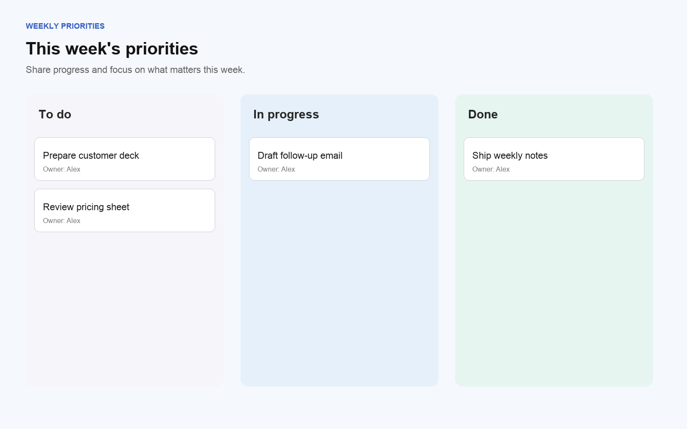
Figure: Example with owners and clearer columns
After Accept, add a card again and check. Loop until every item on the done list is met. After building, you can also ask in the same chat to “add three tasks for today” - another way to use a Gadget.
Ch. 6 · 5 Final check
Check yourself against the done list above. If you can tick them all, this chapter is done.
If something is missing, follow up specifically in the same conversation. Once it is good, keep using it - “add three cards for today” and similar. If slides (Chapter 5) are tools for presenting, a board is a tool you touch every day. Same loop; different job.
What you gained
Small work apps form with the same request → Accept → try → follow-up path as slides. More controls do not change the pattern.
Ch. 6 · summary
Tip
Setting a goal and revising many times is the same flow as with slides. Next we connect outside services like GitHub.
Ch. 7 · chapter opener
7
Link GitHub and more through Gatekeepers
Ch. 7 · 1 Goal
In this chapter you connect GitHub through Gatekeepers and build a tool that shows Issues. Connection steps vary by environment, so we focus on where the screens live and the order of actions.
If you skipped Connect your services in Chapter 3, you still arrive at the same place. Before using a company account, check internal rules. A personal practice repository is the safer starting point.
You’re done when
GitHub is linked via Gatekeepers and OAuth; in Connections you pick only the repo you use (for example smilior/smilior.com). You request an Issue dashboard and keep it.
When you run from your own PC locally, GitHub OAuth app setup is required before the UI flow. Steps are in this chapter. If you only use an environment someone already prepared, you can skip the OAuth and .env sections. Start reading from connecting GitHub in Gatekeepers (connect and wire the repo).
Ch. 7 · 2 Only what you need
As in Chapter 4, Gatekeepers is the doorway to outside services like GitHub. At first neither the agent nor Gadgets are linked outside. When you connect, you choose only the repo (and similar) you need. Login keys stay on the Gatekeepers side and do not pass to the agent.
For GitHub, prefer “this practice repo only,” not “the whole account.” If a workspace is shared, Gatekeepers also checks whether the other person has permission.
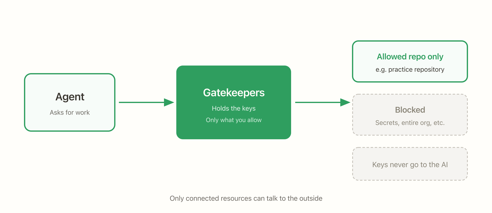
Figure: Only the resources you select can talk to the outside
Ch. 7 · 3 Gatekeepers
Open the Gatekeepers icon near the lower left, or go to /gatekeepers. AVAILABLE lists GitHub, Slack, Google, and more. Accounts you connect here can later be added to each Gadget’s Connections.
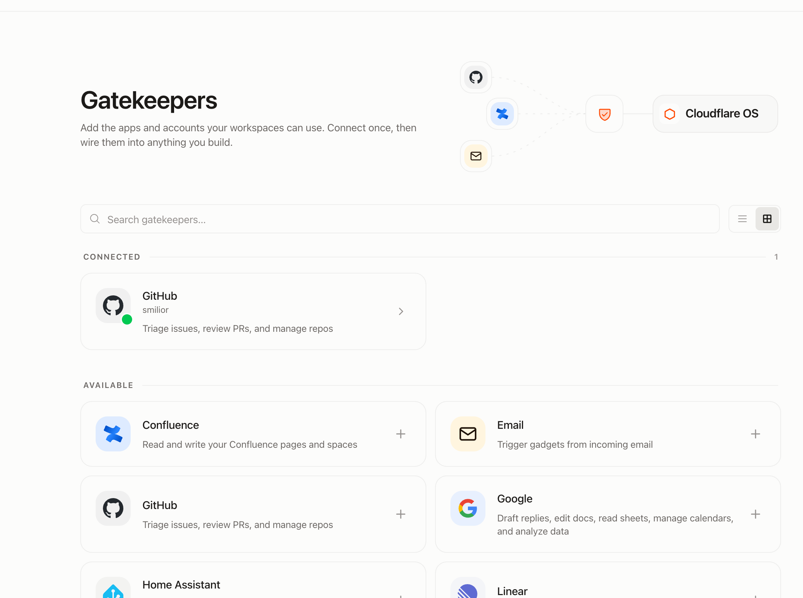
Figure: Gatekeepers list. Add GitHub and others from here
The Connect your services step in first-time setup is the same kind of entrance. Either path leaves the outside link on the Gatekeepers side.
Ch. 7 · 4 GitHub OAuth
The Connect GitHub screen has no Client ID or Secret fields. Locally you first create an OAuth App on GitHub and save those values in a file on your PC. Without them you stop at “GitHub Gatekeeper Not Configured.” This is not an /admin step. On a prepared environment, skip this section and the next local config section.
On GitHub: Settings → Developer settings → OAuth Apps (not GitHub Apps) → New OAuth App. Enter the following (local localhost:8787 example).
| Field | What to enter (local example) |
|---|---|
| Application name | Anything (e.g. Cloudflare OS Local) |
| Homepage URL | http://localhost:8787 |
| Application description | Optional; blank is fine |
| Authorization callback URL | http://localhost:8787/gatekeeper/github/oauth(no trailing slash; this field must match exactly) |
| Enable Device Flow | Off (do not check) |
After Register application, press Generate a new client secret and note Client ID and Client secret. On the next page you write them into local Cloudflare OS.
Note
OAuth App and GitHub App are different. Use OAuth App here. If the server runs on a public URL, set the callback URL to match that URL.
Ch. 7 · 5 Local config
Do not paste the ID and Secret from GitHub into the Connect screen. Open the cloudflare-os folder you cloned in Chapter 2 (Windows start steps near p. 20, Mac near p. 17; often cloudflare-os under your home folder).
Inside packages/gatekeeper-github, create a file named .env with the two lines below. Then stop pnpm run-local in the terminal and start it again.
What to put in .env
CLIENT_ID=(your Client ID)
CLIENT_SECRET=(your Client secret)
The filename is .env with a leading dot (not env.txt).
After you save and restart, Continue to GitHub in Gatekeepers can open GitHub’s permission screen.
Handle with care
Client ID and Client secret are like keys to GitHub. Store them in notes or a password manager; do not share them. Do not put .env on a public GitHub repo or similar. If it leaks, someone else can connect as you.
If you still see Not Configured, check in order: (1) file is at packages/gatekeeper-github/.env (2) line names are CLIENT_ID / CLIENT_SECRET (3) after save you stopped and restarted pnpm run-local.
Ch. 7 · 6 Connect GitHub
When ready, press the GitHub card in Gatekeepers. Connect GitHub explains that Repository / Issue / Pull Request can be used and that Gatekeepers sits between GitHub and the Gadget. Press Continue to GitHub to open GitHub’s permission screen in the browser.
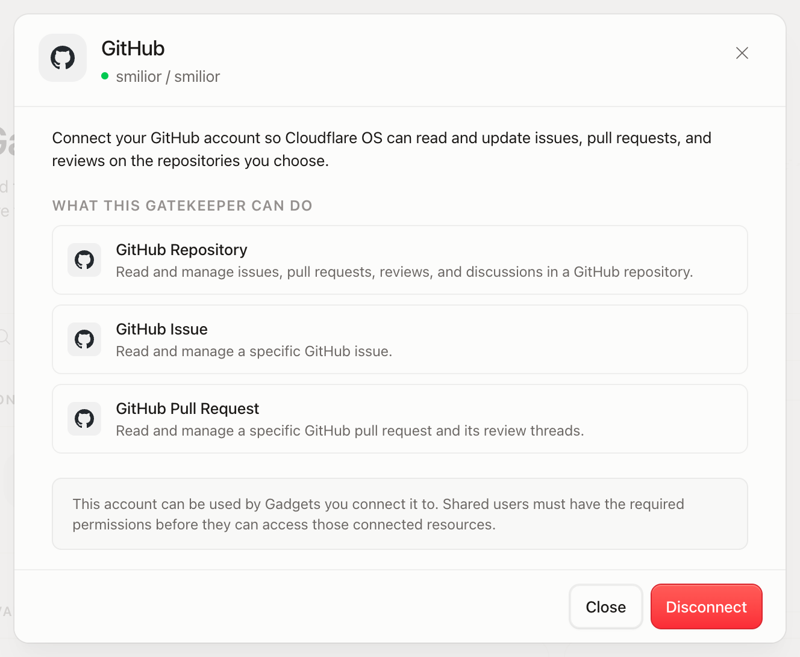
Figure: Before connecting GitHub. Continue to GitHub starts auth
After you approve, pick repositories to use. Do not grant access to secret internal repos or org accounts you must not touch. If you still see Not Configured, recheck local settings and restart.
Ch. 7 · 7 Wire the Gadget
Connecting a GitHub account is not enough - the tool still does not reach outside on its own. Open the Gadget and, on the Connections tab, add what this tool is allowed to use.
Connect resource → GitHub → Repository, then pick only the repo you need, such as smilior/smilior.com. “Only this repository” is set here. Once connected, it appears in the list like the next figure.
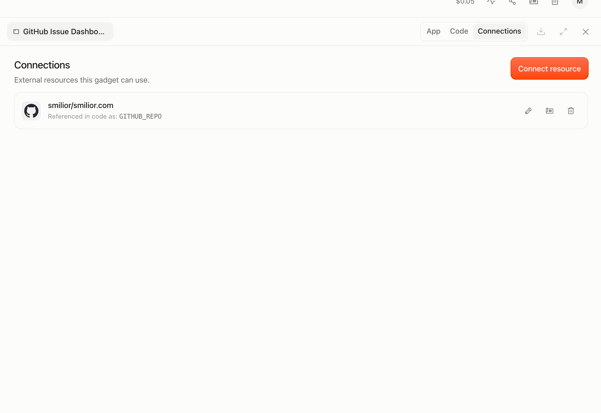
Figure: Connections. Example wiring only smilior/smilior.com
If you don’t want another repo touched, simply don’t add it. You can separate destinations per tool.
Ch. 7 · 8 Ask and use
After you pick a repository in Connections, ask in the same workspace chat. Wire first, then request. Here we build an Issue dashboard.
Request (example)
Build a dashboard that lists Issues for smilior/smilior.com. I also want counts of open vs closed, and a chart of closed-issue trends.
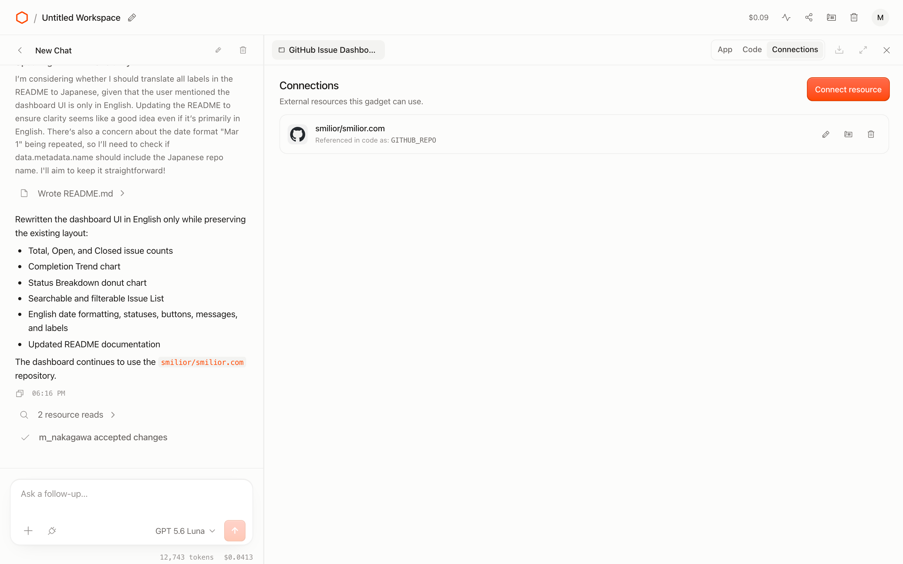
Figure: smilior/smilior.com on the right; request and Accept on the left
Review the proposal and press Accept changes to keep the Gadget. Without the repo added to Connections, the same request cannot pull GitHub data.
Ch. 7 · 9 The dashboard you get
After Accept, the dashboard stays on the Gadget’s App tab. You get a total count, open and closed numbers, a closed-trend chart, and an Issue list. The repo in view is the one wired in Connections: smilior/smilior.com.
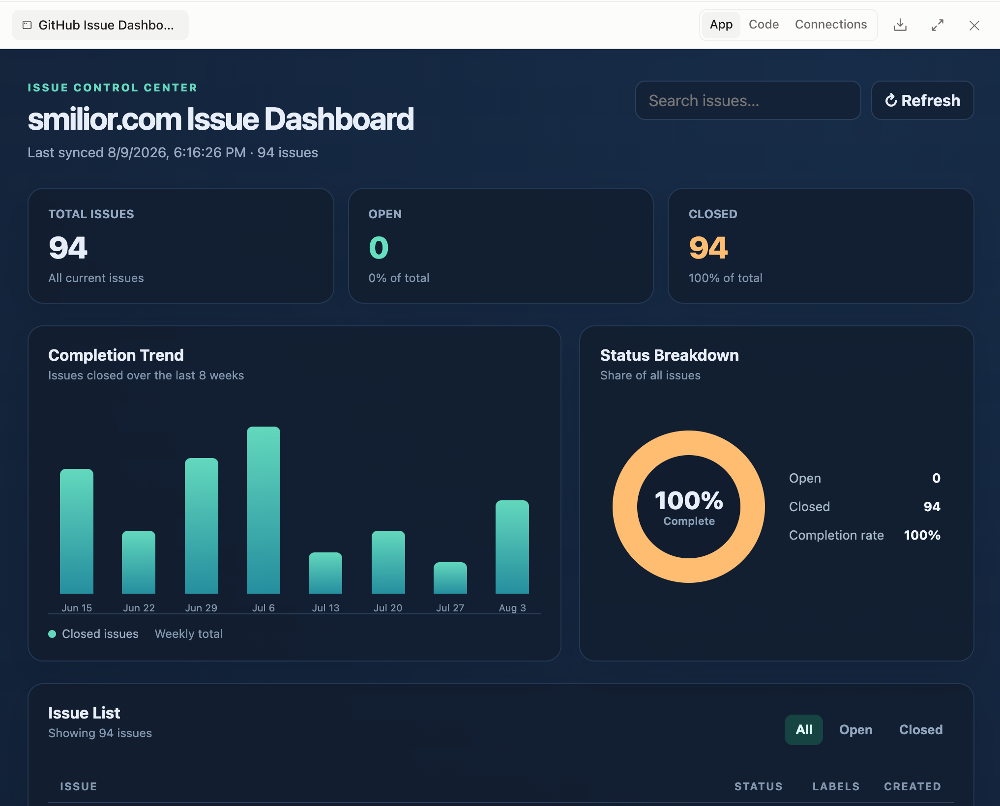
Figure: Issue list with open/closed and trend chart example
Tip
When linking outside, don’t hand over every key - only pass the repo you use. Remember: wire it in Connections first, then ask.
Ch. 7 · summary
Tip
If you see Not Configured, check .env and restart first. After you’re connected, the path is “wire this repo only → ask.”
Closing
In this book you opened Cloudflare OS, asked the agent, kept slides and small apps, and linked GitHub and more through Gatekeepers. In real work, the make → look → fix loop beats writing one perfect sentence. Screens will change in Early Access; this order stays useful.
Keep in mind where Cloudflare OS is headed. It isn’t a place to rebuild the company’s core systems. In-house engineering teams can’t always keep up, while people doing the day-to-day work still struggle. This is about letting ordinary employees build those small apps in natural language. Memos, boards, Issue lists - what you touched in Chapters 5–7 are examples.
As agents and small apps land in daily work, how each person runs their job shifts a little. Inside organizations, “how do we publish and distribute what we made?” is always hard. Sharing and Blueprints give Cloudflare OS mechanisms for that. A personal trick can grow into a team tool more easily.
Start small. Write one request, Accept, and fix it again tomorrow. You feel the value after you use it.
Thank you for reading to the end. I look forward to your next step.
smilior.com
Masahiro Nakagawa
Appendix A · glossary
| Term | In one line |
|---|---|
| Agent | The one you talk to in plain language to get work done |
| Gadget | Your personal small app or tool |
| Blueprint | App template (no data attached) |
| Gatekeepers | Links to outside services; holds keys; passes only what’s needed |
| Workspace | Where a job’s chat, results, and connections gather |
| Outputs | List of finished results (Apps / Docs / Slides, etc.) |
| Explore | Storefront for recommended shapes |
| Accept changes | Commit a proposal and keep the result as yours |
| AI Gateway | Where model calls pass through and get tracked (depends on setup) |
| Your Company OS | Cloudflare OS hosted as your company’s own, with your words and connections (see the Preface and Closing; share and Blueprint steps in Ch. 4) |
Appendix B · operations cheat sheet
pnpm run-local → http://localhost:8787CLIENT_ID / CLIENT_SECRET in packages/gatekeeper-github/.env → restarthttp://localhost:8787/gatekeeper/github/oauthAppendix C · links
Link destinations may change with updates. This book is an unofficial learning guide.
Colophon
Cloudflare OS Essentials
Build small apps safely with chat, not code
2026 First edition
Audience: Hands-on intro for non-engineers
Verified on: local start (pnpm run-local) / Cloudflare account (optional)
Cloudflare OS is in Early Access. Screens and behavior may change with updates. This material is an unofficial learning guide, not official Cloudflare documentation.